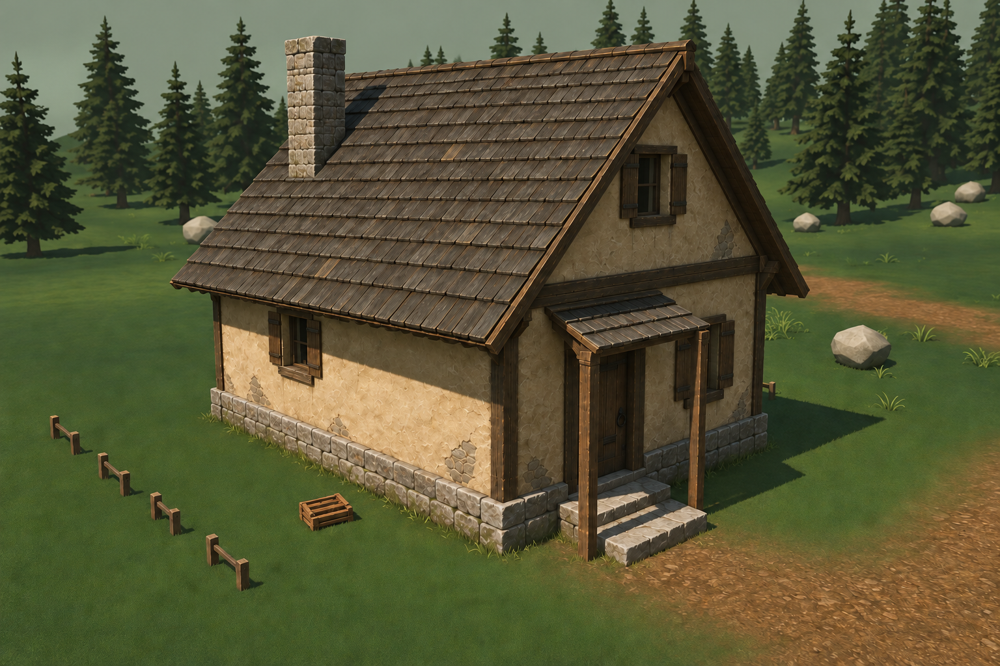
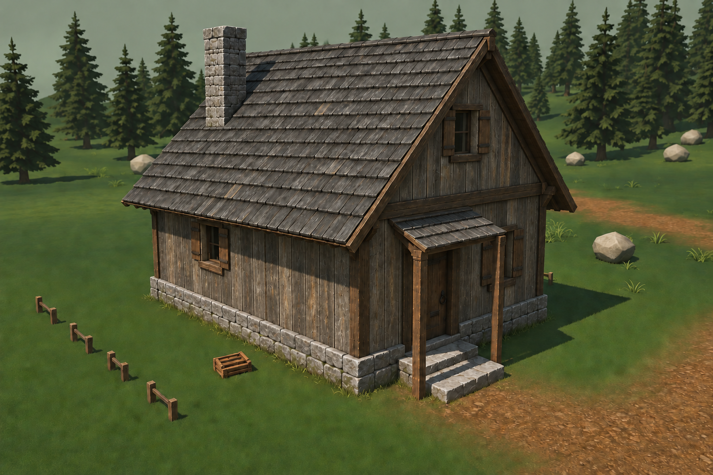
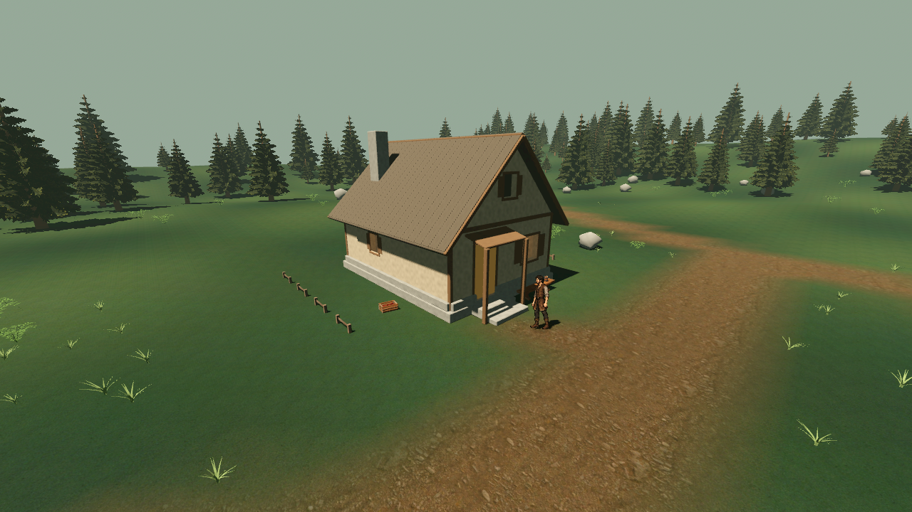

AshBound · VILLAGE-MATERIAL-STUDY-01 · v1 · 24.09.2026
Как отделать первый дом
Вариант А принят владельцем (D-077). Далее — перенос на один H01.
А · Штукатурка

Обжитой лесной дом. Спокойные стены, локальные ремонты, тёмное дерево. Выбран владельцем для H01.
Б · Дерево

Суровее и темнее. Дощатый фасад ближе к хозяйственным лесным постройкам.
Сейчас в игре

Выше — художественные предложения на основе этого дома. Точные проёмы, геометрия, свет и механика дверей остаются за игровой моделью. Фигура героя в финальных концептах убрана.
После выбора
Один H01 в реальной сцене: материалы и UV → день, ночь, дождь → двери и интерьер → свежая APK на S23. Затем решаем, как применять общий язык к мастерской и амбару.